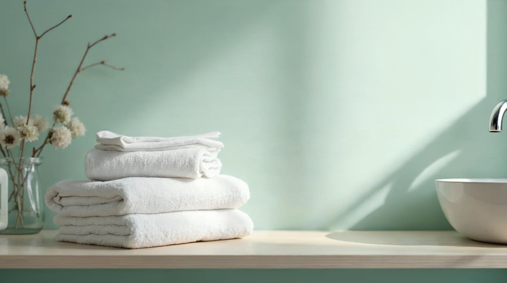
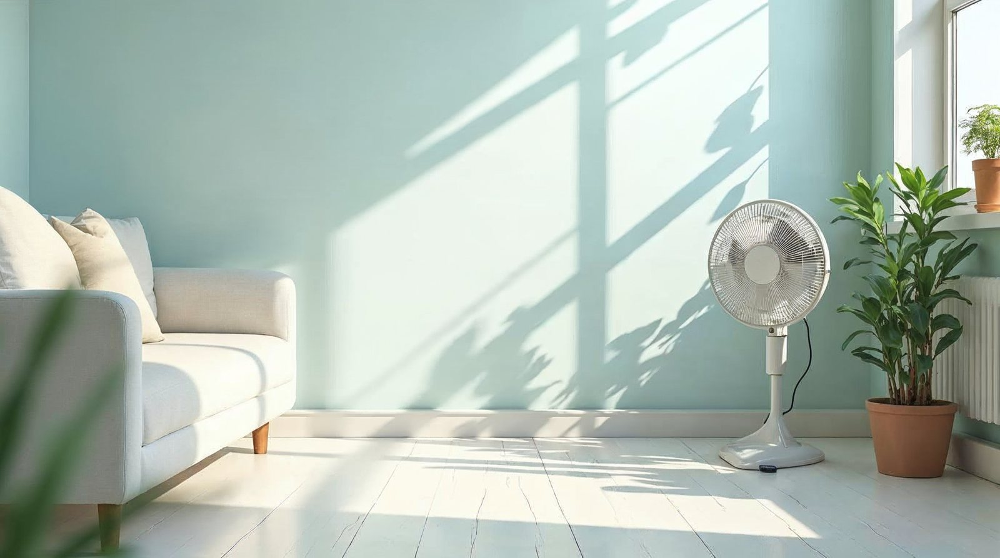

이종호 한의사 감수좋은꿈참사랑한의원 대표원장 (한의사 면허번호 19769)발행 2026-11-26 · 수정 2026-11-27
이 글의 차례
샤워를 하다가 왼쪽 겨드랑이를 닦는데 손끝에 단단한 멍울이 걸려요. 누르면 뻐근하게 아프고 주변이 살짝 뜨겁습니다. 지난달에도 거의 같은 자리에 비슷한 게 생겼다가 터지고 아물었는데, 또 시작인가 싶어 마음이 무거워지죠. 팔을 붙이고 걷기도, 벌리고 걷기도 불편한 며칠이 다시 다가옵니다.
같은 자리에 종기가 되풀이되는 분들은 오랫동안 혼자 참아 오신 경우가 많아요. 자리가 자리인 만큼 누구에게 보여 주기도 말하기도 어렵고, 그냥 종기겠거니 하고 짜거나 연고를 바르며 지내셨다고 해요. 그러다 아문 자리에 흉이 남고 그 옆에 또 새 멍울이 생기면서 비로소 뭔가 다르다고 느끼셨다고요.
먼저 이것부터 말씀드릴게요. 화농성 한선염은 깨끗하지 않아서 생기는 병도 아니고, 남에게 옮는 병도 아니에요. 그동안 씻는 걸 탓하며 지내셨다면, 그 짐은 이제 내려놓으셔도 돼요.
화농성 한선염은 털이 나는 자리의 모낭이 막히고 염증이 생기면서, 아픈 멍울과 고름집이 같은 자리 주변에 되풀이되는 피부 질환이에요. 그러니까 사실은 '한 번 생긴 종기'와 '같은 자리에 돌아오는 멍울'은 다른 얘기예요. 뒤쪽이라면 일찍 알아차리고 피부과와 함께 길게 보는 게 중요하거든요.
이 글에서는 화농성 한선염이 흔한 종기와 어떻게 다른지, 왜 같은 자리에 되풀이되는지, 피부과 치료와 함께 생활에서 무엇을 살피는지, 진료실에서는 무엇을 여쭙는지를 차근차근 정리해 볼게요.
흔한 종기와는 무엇이 다를까요?
흔한 종기는 털구멍에 세균이 들어가 생기는 고름집으로, 대개 한 번 생겼다가 고름이 빠지고 아물면 그 자리에 다시 생기지 않는 경우가 많습니다. 몸 어디에나 생길 수 있고, 엉덩이나 허벅지, 얼굴에도 흔합니다.
화농성 한선염은 몇 가지 점에서 다릅니다. 겨드랑이, 사타구니, 엉덩이 사이, 가슴 아래, 아랫배의 접히는 자리처럼 피부가 맞닿고 땀샘이 많은 자리에 주로 생깁니다. 그리고 같은 자리나 바로 옆에서 몇 주, 몇 달 간격으로 되풀이되는 것이 가장 큰 특징입니다.
되풀이되다 보면 피부 아래에서 고름집끼리 길처럼 이어진 굴이 생기기도 하고, 아문 자리에는 밧줄처럼 당기는 흉이 남기도 합니다. 피부 표면에 검은 점이 두 개씩 짝지어 보이는 것도 이 병에서 자주 볼 수 있는 모습입니다.
그래서 같은 자리에 종기가 1년에 두세 번 이상 되풀이된다면 흔한 종기로만 넘기지 마시고 피부과에서 화농성 한선염인지 확인받아 보시길 권합니다. 일찍 알아차릴수록 굴과 흉이 생기기 전에 관리를 시작할 수 있습니다. 병의 이름을 알게 되는 것만으로도 막연한 답답함이 조금 풀렸다는 분이 많습니다.
왜 같은 자리에 되풀이될까요
화농성 한선염은 털이 자라는 모낭의 입구가 각질로 막히는 데서 시작한다고 알려져 있습니다. 막힌 모낭 안에 내용물이 쌓이다 터지면 주변 피부에 염증이 번지고, 몸의 면역이 이 염증에 과하게 반응하면서 아픈 멍울과 고름집이 만들어집니다.
한번 염증이 생긴 자리는 피부 아래 구조가 바뀌어 다시 염증이 생기기 쉬워집니다. 아문 것처럼 보여도 안쪽에 작은 굴이나 막힌 모낭이 남아 있는 경우가 있어, 같은 자리나 바로 옆에서 다시 고개를 듭니다.
이 병이 생기기 쉬운 바탕과 되풀이를 부추기는 요인은 어느 정도 알려져 있습니다. 진료실에서 이야기를 나눠 보면 아래와 같은 경우가 자주 겹칩니다.
- 가족 가운데 비슷한 종기가 되풀이되는 분이 계신 경우
- 담배를 피우시는 경우
- 체중이 늘어 피부가 접히고 맞닿는 자리가 많아진 경우
- 꽉 끼는 옷이나 속옷이 접히는 자리를 계속 문지르는 경우
- 땀이 많고 접히는 자리가 늘 축축한 경우
- 월경 주기 무렵이나 큰 스트레스, 잠 부족 시기에 심해지는 경우
이 가운데 담배와 체중, 마찰은 생활에서 손댈 수 있는 부분입니다. 하나를 바꾼다고 바로 멈추지는 않더라도, 되풀이되는 간격과 세기를 조금씩 줄이는 데 힘이 될 수 있습니다.

피부과 치료와 함께 가는 법
화농성 한선염은 피부과에서 바르는 약과 먹는 항생제, 염증을 다스리는 약, 최근에는 주사 치료제 등으로 관리합니다. 굴이나 흉이 생긴 경우에는 그 부분을 수술로 정리하기도 합니다. 어떤 방법을 쓸지는 멍울의 범위와 되풀이 정도에 따라 피부과에서 정합니다.
한의원 진료는 피부과 치료를 대신하는 것이 아니라 나란히 가는 것입니다. 피부과에서 염증과 고름집을 직접 다루는 동안, 한의원에서는 땀과 열감, 소화, 잠, 스트레스처럼 되풀이에 영향을 주는 몸 전체의 흐름을 함께 들여다봅니다.
피부과 약을 드시거나 바르고 계시다면 이름과 사용 방법을 알려 주세요. 그에 맞춰 진료 방향을 정하고, 피부과 처방은 상의 없이 멈추지 않도록 안내합니다. 특히 항생제는 처방받은 기간을 지키는 것이 중요합니다. 증상이 가라앉았다고 일찍 멈추면 다시 고개를 들 수 있습니다.
짜면 빨리 나을까요?
멍울이 커지고 아프면 손으로 짜서 고름을 빼고 싶어집니다. 하지만 손으로 짜면 염증이 피부 아래 옆으로 더 번질 수 있고, 굴이 생기는 것을 부추길 수 있습니다. 바늘로 따는 것도 세균이 들어갈 수 있어 권하지 않습니다.
멍울이 아플 때는 깨끗한 수건을 따뜻한 물에 적셔 10분 정도 올려 두면 불편이 조금 덜할 수 있습니다. 고름이 저절로 터졌다면 흐르는 물로 부드럽게 씻고 깨끗한 거즈로 덮고, 하루 한두 번 갈아 주세요. 고름을 빼야 할 만큼 크거나 아프면 피부과나 외과에서 처치를 받으시는 것이 안전합니다.
일상에서 먼저 해 볼 수 있는 것
생활 관리는 마찰과 습기를 줄이고, 되풀이를 부추기는 요인을 하나씩 덜어 내는 것이 기본입니다. 아래 가운데 쉬운 것부터 시작해 보세요.
- 접히는 자리를 조이지 않는 넉넉한 면 옷과 속옷 입기
- 땀을 흘린 뒤 접히는 자리를 닦고 충분히 말리기
- 순한 세정제로 부드럽게 씻고 때를 밀거나 세게 문지르지 않기
- 면도날로 겨드랑이와 사타구니 털을 미는 것은 잠시 쉬기
- 담배를 피우신다면 줄이거나 끊는 방법을 함께 찾아보기
- 체중이 늘었다면 무리하지 않는 선에서 조금씩 줄여 보기
체중을 조금만 줄여도 접히는 자리의 마찰과 습기가 줄어 멍울이 덜 생긴다는 분이 계십니다. 굶는 다이어트보다는 끼니의 구성을 바꾸고 걷는 시간을 늘리는 쪽이 오래갑니다. 땀이 많이 나는 운동 뒤에는 바로 씻고 말려 주세요.
단 음식과 유제품이 염증을 키운다는 이야기도 있지만, 사람마다 다르게 반응하는 경우가 많습니다. 모두 끊기보다는 먹은 날과 멍울이 생긴 날을 함께 적어 보시면 내 몸에 맞는 조절 방법을 찾는 데 도움이 됩니다.
마음의 무게도 함께 살핍니다
자리가 자리인 만큼, 이 병은 몸의 통증만큼 마음의 부담이 큰 경우가 많습니다. 수영장이나 목욕탕을 피하게 되고, 가까운 사람에게도 말하기 어렵고, 고름이 옷에 묻을까 늘 신경이 쓰입니다. 오래 되풀이되면서 지치고 위축되었다는 말씀을 자주 듣습니다.
진료실에서는 이런 이야기도 다른 증상과 똑같이 차분하게 나눕니다. 혼자 오래 참아 오셨다면 그것만으로도 많이 애쓰신 것입니다. 잠이 얕아지고 마음이 많이 가라앉았다면 그 부분도 함께 살피겠습니다.
비슷해 보이는 다른 멍울
겨드랑이나 사타구니에 만져지는 멍울이 모두 화농성 한선염은 아닙니다. 피부 아래 동그랗게 만져지고 가운데에 작은 구멍이 있는 피지 낭종은 염증이 생기면 붉고 아파져 종기처럼 보이기도 합니다. 다만 대개 한 자리에 하나씩 생기고, 주변으로 번지며 되풀이되는 모양은 아닙니다.
감기나 몸살 뒤, 혹은 팔다리에 상처가 난 뒤 겨드랑이나 사타구니의 림프샘이 부어 멍울처럼 만져지는 경우도 있습니다. 이런 멍울은 피부 겉보다 깊은 곳에서 만져지고, 고름이 피부 밖으로 나오지 않는 경우가 많습니다. 몇 주가 지나도 줄지 않거나 점점 커진다면 내과나 외과에서 확인을 받아 보시길 권합니다.
털이 난 자리에 작은 뾰루지가 여러 개 올라오는 모낭염도 헷갈릴 수 있습니다. 모낭염은 대개 얕고 작으며, 면도나 마찰 뒤에 생겼다가 며칠 안에 가라앉는 경우가 많습니다.

계절과 하루 흐름에 따라 달라지는 멍울
여름에는 땀이 많아지고 접히는 자리가 오래 축축하게 머물러 멍울이 잦아진다는 분이 많습니다. 반대로 겨울에도 두꺼운 옷과 난방 때문에 땀이 차고 옷이 문질러 비슷한 일이 생깁니다. 계절보다 땀과 마찰이 얼마나 쌓이느냐가 더 중요합니다.
오래 앉아 일하는 분은 엉덩이 사이와 허벅지 안쪽에, 팔을 많이 쓰는 분은 겨드랑이에 멍울이 잘 생긴다고 하십니다. 한 시간에 한 번쯤 일어나 걷고, 땀이 찬 옷은 갈아입는 작은 습관이 접히는 자리를 쉬게 해 줍니다.
먼저 이렇게 여쭙니다
처음 오시면 저는 대략 이런 순서로 여쭙니다. 미리 생각해 오시면 이야기가 훨씬 수월해집니다.
- 멍울은 몸의 어디에 생기나요? 처음 생긴 것은 언제인가요?
- 1년에 몇 번쯤 되풀이되나요? 한 번 생기면 며칠쯤 가나요?
- 터진 뒤 흉이나 길처럼 이어진 굴이 남았나요?
- 가족 가운데 비슷한 종기가 되풀이되는 분이 계신가요?
- 담배를 피우시나요? 최근 체중 변화가 있었나요?
- 피부과에서 받은 진단과 드시거나 바르는 약이 있나요?
모든 질문에 정확히 답하지 못하셔도 괜찮습니다. 되풀이되는 대략적인 간격만 기억하셔도 이야기의 실마리가 됩니다. 멍울이 있는 자리를 보여 주시기 어려우시면 말씀으로만 설명해 주셔도 괜찮습니다.
한의원에서 함께 살필 수 있는 경우
- 몸에 열이 많고 땀이 많아 접히는 자리가 늘 축축한 경우
- 월경 주기나 스트레스, 잠 부족 시기에 멍울이 되풀이되는 경우
- 기름진 음식을 드신 뒤 속이 더부룩하고 대변이 고르지 않은 경우
- 피부과 치료를 받으며 피로와 잠, 소화를 함께 살피고 싶은 경우
- 오래 되풀이되며 긴장과 걱정이 커지고 잠이 얕아진 경우
좋은꿈참사랑한의원에 오시면 모든 분의 맥을 먼저 짚고, 땀과 열감, 소화, 대소변, 잠을 여쭈며 몸 전체의 흐름을 살펴봅니다.
진찰한 내용을 바탕으로 생활에서 바꿔 볼 것 하나와 함께 침, 한약 상담 가운데 지금 상태에 맞는 것을 정합니다. 멍울과 고름집이 있는 자리에는 침을 놓지 않습니다. 한약을 상의할 때는 드시는 약을 모두 확인하고 신중하게 정합니다.
임신 중이시거나 임신을 계획하고 계시다면 진료 전에 먼저 알려 주세요. 그에 맞춰 조심스럽게 정하고, 필요하면 산부인과와 상의하시도록 안내합니다.
이렇게 기록해 오시면 상담이 쉬워집니다
되풀이되는 병은 기록이 흐름을 보여 줍니다. 두세 달 정도 간단히 적어 보세요.
- 멍울이 생긴 날짜와 자리, 크기
- 터졌는지, 며칠 만에 가라앉았는지
- 통증의 세기(0~10)
- 월경 주기, 스트레스가 컸던 주, 잠을 설친 날 표시
- 담배, 술, 단 음식, 기름진 음식을 드신 날 표시
- 피부과 치료를 받은 날과 쓰신 약
달력에 멍울이 생긴 날만 동그라미로 표시해도 간격이 보입니다. 두세 달이 쌓이면 어떤 시기에 몰려서 생기는지 눈에 들어오기 시작합니다. 빠진 날이 있어도 괜찮으니 편한 방법으로 이어 가 보세요.
길게 보고 함께 가기
화농성 한선염은 한두 번의 치료로 끝나기보다, 되풀이되는 간격을 늘리고 세기를 줄여 가는 병인 경우가 많아요. 그래서 조급해하기보다 피부과와 한의원, 그리고 생활이 함께 길게 가는 그림을 그리시길 권해요.
몸의 열과 땀, 잠과 소화를 살피는 건 제가 맡을게요. 대신 하나만 부탁드려요. 이번 주에는 겨드랑이와 사타구니처럼 접히는 자리를 조이지 않는 옷으로 바꿔 주세요. 그 자리를 덜 문지르는 것만으로도 피부가 숨 돌릴 틈이 생기거든요.
딴 건 하시던 대로 편하게 하셔도 돼요. 한꺼번에 식단도 운동도 다 바꾸려 하면 오래가기 어려워요. 약하게, 오래, 매일이에요. 멍울이 다시 올라온 날이 있어도 스스로를 탓하지 마세요. 원래 이 병이 그렇게 오르내리는 거예요.
다음에 오시면 달력 기록을 함께 펼쳐 보며, 되풀이되는 흐름을 어떻게 늦출지 얘기 나눌게요. 궁금한 건 그때 편하게 물어보세요. 멍울 없이 지나가는 날이 조금씩 길어지는 것을 함께 목표로 삼아 보겠습니다.
이런 증상은 먼저 확인이 필요합니다
- 멍울 주위의 붉은 기가 빠르게 퍼지고 몸에 열이 나며 오한이 드는 경우
- 고름집이 몹시 커지고 아파 팔다리를 움직이기 어렵거나 몸이 몹시 처지는 경우
이런 신호가 있으면 한의원보다 가까운 병원이나 응급실을 먼저 찾으세요.
함께 읽으면 좋은 글
- 털이 난 자리마다 붉은 뾰루지와 고름이 자꾸 올라오는 모낭염은 어떻게 살피나요?
- 손바닥·발바닥·겨드랑이에 땀이 너무 많은 다한증은 어떻게 살피나요?
- 여름에 땀이 차는 곳마다 붉은 좁쌀 같은 것이 올라올 때는 어떻게 살피나요?
- 어른이 되어 턱과 볼에 붉고 아픈 여드름이 되풀이되는 성인 여드름은 어떻게 살피나요?
여쭙는 것
- 멍울은 몸의 어디에 생기나요? 처음 생긴 것은 언제인가요?
- 1년에 몇 번쯤 되풀이되나요? 한 번 생기면 며칠쯤 가나요?
- 터진 뒤 흉이나 길처럼 이어진 굴이 남았나요?
생활에서 해 볼 것
- 접히는 자리를 조이지 않는 넉넉한 면 옷과 속옷 입기
- 땀을 흘린 뒤 접히는 자리를 닦고 충분히 말리기
- 순한 세정제로 부드럽게 씻고 때를 밀거나 세게 문지르지 않기
한의원에서 함께 살필 것
- 몸에 열이 많고 땀이 많아 접히는 자리가 늘 축축한 경우
- 월경 주기나 스트레스, 잠 부족 시기에 멍울이 되풀이되는 경우
- 기름진 음식을 드신 뒤 속이 더부룩하고 대변이 고르지 않은 경우
먼저 확인이 필요한 신호
- 멍울 주위의 붉은 기가 빠르게 퍼지고 몸에 열이 나며 오한이 드는 경우
- 고름집이 몹시 커지고 아파 팔다리를 움직이기 어렵거나 몸이 몹시 처지는 경우
한눈에 보는 표
| 구분 | 핵심 |
|---|---|
| 여쭙는 것 | 멍울은 몸의 어디에 생기나요? 처음 생긴 것은 언제인가요? 1년에 몇 번쯤 되풀이되나요? 한 번 생기면 며칠쯤 가나요? |
| 생활에서 해 볼 것 | 접히는 자리를 조이지 않는 넉넉한 면 옷과 속옷 입기 땀을 흘린 뒤 접히는 자리를 닦고 충분히 말리기 |
| 한의원에서 함께 살필 것 | 몸에 열이 많고 땀이 많아 접히는 자리가 늘 축축한 경우 월경 주기나 스트레스, 잠 부족 시기에 멍울이 되풀이되는 경우 |
| 먼저 확인이 필요한 신호 | 멍울 주위의 붉은 기가 빠르게 퍼지고 몸에 열이 나며 오한이 드는 경우 고름집이 몹시 커지고 아파 팔다리를 움직이기 어렵거나 몸이 몹시 처지는 경우 |
자주 묻는 질문
화농성 한선염은 씻지 않아서 생기나요?
그렇지 않습니다. 모낭이 막히고 면역이 과하게 반응하면서 생기는 병으로, 깨끗하지 않아서 생기는 것이 아닙니다. 남에게 옮는 병도 아닙니다.
종기를 짜면 빨리 낫지 않나요?
손으로 짜면 염증이 피부 아래로 더 번지고 굴이 생기는 것을 부추길 수 있습니다. 따뜻한 수건으로 불편을 덜고, 고름을 빼야 할 때는 피부과나 외과에서 처치를 받으시길 권합니다.
피부과 치료를 받고 있는데 한의원 진료를 함께 받아도 되나요?
함께 받으실 수 있습니다. 드시는 약과 치료 일정을 알려 주시면 그에 맞춰 진료 방향을 정하고, 피부과 처방은 상의 없이 멈추지 않도록 안내합니다.
담배를 끊으면 도움이 되나요?
담배는 이 병을 부추기는 요인으로 알려져 있어 줄이거나 끊는 것이 되풀이를 늦추는 데 도움이 될 수 있습니다. 혼자 어렵다면 보건소 금연 상담을 함께 이용해 보세요.
좋은꿈참사랑한의원은 재진 때 지난번 이야기부터 이어서 여쭙니다. 진료시간과 예약은 오시는 길에서 확인하세요.
어디서 상담받을 수 있나요?
좋은꿈참사랑한의원은 서울 동작구 만양로2길 2 신성빌딩 3층·5층(서울 동작구 상도동, 7호선 상도역 3번 출구 근처)에 있습니다. 한의사 3명(이종호 대표원장, 조영기 수석진료원장, 정원영 진료원장)이 진료합니다. 진료시간은 평일 09:30~20:00(점심 13:00~14:00), 토·일·공휴일 09:30~15:00이며, 방문 전 전화로 확인을 권합니다. 예약은 네이버 예약, 카카오톡 상담, 전화 02-815-7510로 받습니다.
이 글은 일반적인 건강 정보이며 개인의 진단이나 치료를 대신하지 않습니다. 증상이 있거나 복용 중인 약이 있다면 진료를 통해 확인하세요. 치료 효과는 개인마다 다를 수 있습니다.
작성 기준: 일반적으로 알려져 있는 건강 정보를 참고해 정리했습니다(대표원장 감수). 증상 기록은 1~2주 동안 하루 1회, 비슷한 시간에 적어 오시면 지난 상태와 비교하기 쉽습니다.